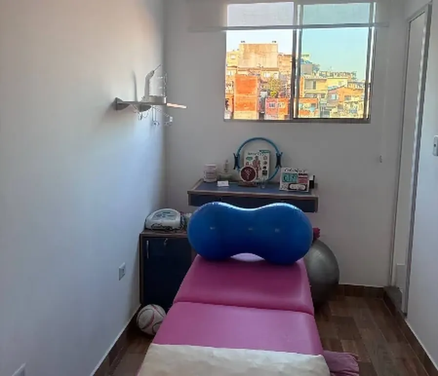
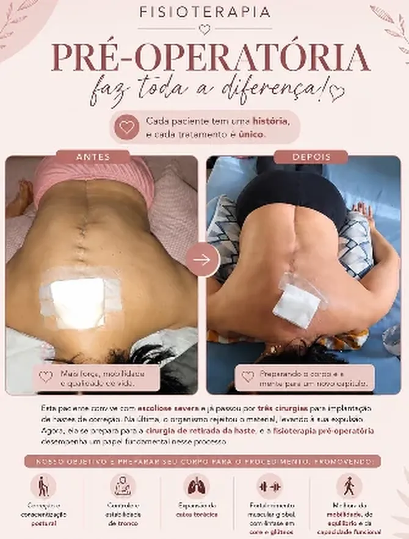

Cuidado que acolhe. Reabilitação que transforma.
Fisioterapia e Psicologia para cuidar de você de forma integral, humana e personalizada.
5,0 em 12 avaliações no Google Atendimento humanizado Fisioterapia e Psicologia

Um espaço para cuidar de você
A SG Reabilitação e Bem Estar é um espaço acolhedor dedicado ao cuidado, à reabilitação e ao bem-estar, reunindo Fisioterapia e Psicologia no Jardim Orly, em São Paulo.
Cada paciente é recebido com atenção e respeito. O atendimento é individualizado, conduzido por profissionais preparados, e o ambiente foi pensado para que você se sinta à vontade desde a sala de espera.
- Ambiente acolhedor
- Atendimento individualizado
- Espaço organizado
- Cuidado humanizado
Como podemos cuidar de você
Fisioterapia
Atendimento fisioterapêutico personalizado, buscando auxiliar na recuperação, mobilidade, funcionalidade e qualidade de vida.
Conhecer fisioterapiaPsicologia
Um espaço de acolhimento e escuta para cuidar da saúde emocional e do bem-estar.
Conhecer psicologiaTambém na clínica: Psicologia adulto e pediátrica · Pilates no solo · Quiropraxia

Fisioterapia com cuidado em cada etapa
Cada pessoa possui uma história, uma rotina e necessidades diferentes. Por isso, o cuidado deve ser individualizado e realizado com atenção a cada etapa do processo.
- Avaliação individualizada
- Atendimento humanizado
- Acompanhamento próximo
- Foco na evolução e bem-estar
Atendimento com Dra. Sthephany Barros, fisioterapeuta.

Um espaço para falar, compreender e cuidar
A psicologia pode ser um espaço de escuta, reflexão e acolhimento, respeitando a história e o momento de cada pessoa.
Atendimento com Graziela Dias, para adultos e crianças.
Conheça nosso espaço
Toque em uma fotografia para ampliar.
Quem passa por aqui, recomenda
5,0 12 avaliações no Google Ver todas
“Desde que conheci a clínica, encontrei um espaço verdadeiramente acolhedor, humano e preparado para cuidar de todas as minhas necessidades, com profissionais que realmente transformam vidas.”
“Gente a Dra Sthe é muito atenciosa, deixa tudo bem explicado e sem dúvidas indica o melhor para cada caso, estou amando meus atendimentos. O espaço é bem aconchegante e sempre tem aquele cafezinho fresco ❤️”
“Lugar super aconchegante, uma pessoa super educada e delicada, ótima pessoa, só vem pra ver como é top!! Nota 1000”
Informação também faz parte do cuidado
Conteúdos que a clínica publica no Instagram, para ajudar você no dia a dia.

Instagram Por que a fisioterapia pode ser importante no processo pré-operatório? Instagram Cuidar da saúde também é respeitar seus limites Ver publicação Instagram Informação para ajudar você a cuidar melhor de si Ver publicaçãoEstamos esperando por você
-
Endereço
Rua Monsenhor Maggi, 102 - Sala 3
Jardim Orly, São Paulo - SP
04432-040 - Telefones (11) 99600-7361 WhatsApp · (11) 96127-0863
-
Horário
Segunda a sexta, das 8h às 13h
Sábado, das 8h às 17h
Domingo: fechado
Seu cuidado pode começar hoje
Entre em contato com a SG Reabilitação e Bem Estar e saiba mais sobre nossos atendimentos.